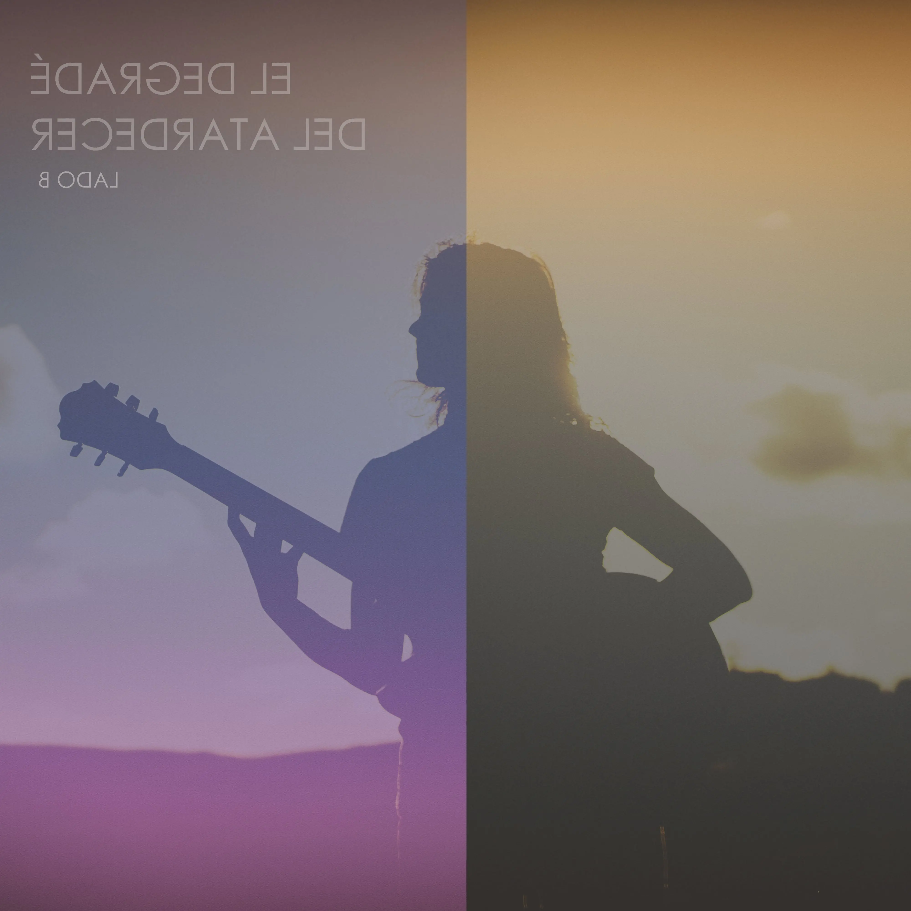

El Degradé Del Atardecer
- Mi Despertar
- Si Querés la Verdad
- Desordenada
- Oda al Otoño Por Venir
- Tu Luz Sin Fin
- Levitar
- El Mar Volar
- Dibujando El Cielo
- Aire
- Suelto Los Tientos
Album • 2023
Los Artistas que acompañaron este disco fueron:
- Paula Rodriguez (Coros)
- Noe Galván (Coros)
- Matías Danglada (Guitarra)
- Martín Dalmasso Molas (Guitarra)
- Rafael Ríos (Teclados)
- Agustín Palacios (Bajo)
- Damían Barrera (Batería)
- Bren Coll (Diseño Gráfico de Letras, Visuales y Escenografía)
- Camilo Gencarelli (Sonido en Vivo y Grabación, Operación de Luces y Visuales)
- Yuliana Brutti, Paula Miranda, Franco De Franceschini (Grabación Audiovisual)
- Poli Verrua (Fotografía en Vivo y Edición de Video)
- Laura Mercado (Prensa)
- Sebastían Bergallo (Mix en Desdémona Estudio)
- Martín Bergallo (Mastering en El Sensei Mastering)
Fluir
- Clara
- Andar
- Anidar Primaveras
- Instante Fugaz
- Abre
- Bienvenida
- Mariposa
- Sonrisa De Cristal
- Cálido Invierno
- No Estés Acá
- Desprender
- Fluir
Album • 2017
- Manuel Arza (Baterías en Cálido Invierno y Desprender)
- Matías Perez (Contrabajo en Desprender y Cuerda de Tambores en Andar)
- Araceli Bonfigli (Coros, Composiciones, Arreglos y Producción)
- Araceli Bonfigli (Dirección Musical y Artística, Producción Musical, Ejecutiva y Fonográfica)
- Gustavo Maciel, Daniel Kogan (Técnicos de Grabación)
- Daniel Kogan (Técnico de Mezcla, Operador y Asistente de Producción Musical)
- Sebastían Bergallo y Daniel Kogan (Mastering)
- Jonathan Taibo (Arte de Tapa, Diseño y Placas de las Gráficas)
- Lula Almirón (Edición de Video y Doble Exposición)
- Jonathan Taibo, Sofía Dada Ríos, Claudia Daniele, Héctor Segundo, Lula Almirón (Fotografías)
El Degradé Del Atardecer
Lado B
- Si Querés La Verdad
- El Mar Volar
- Aire
- Levitar
- Oda Al Otoño Por Venir

EP • 2022
Los EP El degradé del Atardecer - Lado A y Lado B fueron gestados en plena pandemia, grabados en cuarentena, en el pequeño home studio de Araceli Bonfigli, en la soledad y la intimidad que cobijaron esos día y que intenta reflejar la compositora en la sonoridad de estas músicas, en las incesantes búsquedas de uno mismo en la infinidad de colores y sensaciones que dibujan los cielos cuando cae el sol.
- Sebastían Bergallo (Mix en Desdémona Estudio)
- Martín Bergallo (Mastering en El Sensei Estudio)
- Marce Vicente (Cello en una milonga)
- Koky Schroeder (Gráficas y Fotografías)
- Araceli Bonfigli (Composición y Producción Musical)
El Degradé Del Atardecer
Lado A
- Mi Despertar
- Tu Luz Sin Fin
- Dibujando El Cielo
- Desordenada
- Suelto Los Tientos
EP • 2021
Los EP El degradé del Atardecer - Lado A y Lado B fueron gestados en plena pandemia, grabados en cuarentena, en el pequeño home studio de Araceli Bonfigli, en la soledad y la intimidad que cobijaron esos día y que intenta reflejar la compositora en la sonoridad de estas músicas, en las incesantes búsquedas de uno mismo en la infinidad de colores y sensaciones que dibujan los cielos cuando cae el sol.
- Sebastían Bergallo (Mix en Desdémona Estudio)
- Martín Bergallo (Mastering en El Sensei Estudio)
- Marce Vicente (Cello en una milonga)
- Koky Schroeder (Gráficas y Fotografías)
- Araceli Bonfigli (Composición y Producción Musical)